1.1 - "Out of the Past"
Waking up in a new body 250 years after his death, Takeshi Kovacs discovers he's been resurrected to help a titan of industry solve his own murder.
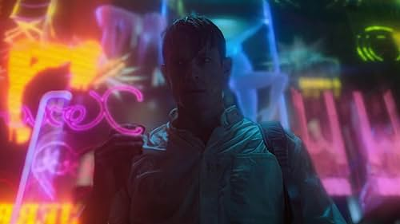
Episodios
Temporada 1
-
1.2 - "Fallen Angel"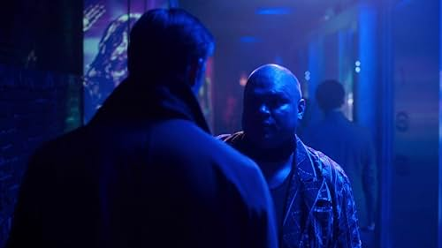
While Kovacs tracks down a man who sent Bancroft a death threat, Lt. Ortega bends the rules to keep tabs on his whereabouts. -
1.3 - "In a Lonely Place"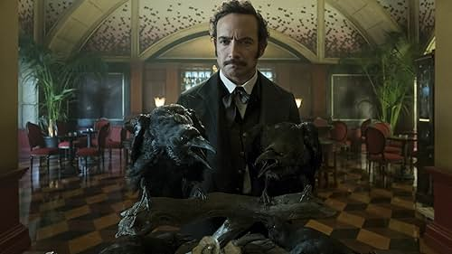
Kovacs recruits an unlikely partner to watch his back during a banquet at the Bancroft home, where Ortega oversees the night's grisly entertainment. -
1.4 - "Force of Evil"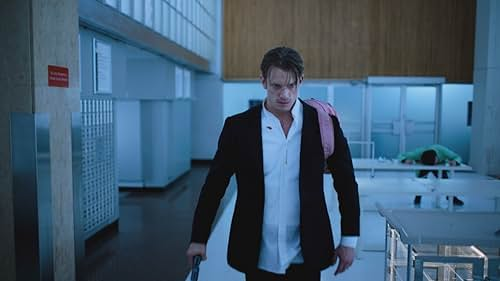
Tortured by his captor, Kovacs taps into his Envoy training to survive. Ortega springs a surprise on her family for Día de los Muertos. -
1.5 - "The Wrong Man"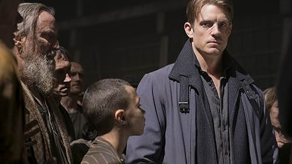
After learning his sleeve's identity, Kovacs demands the full story from Ortega. A tip from Poe leads to a major breakthrough in the Bancroft case. -
1.6 - "Man with My Face"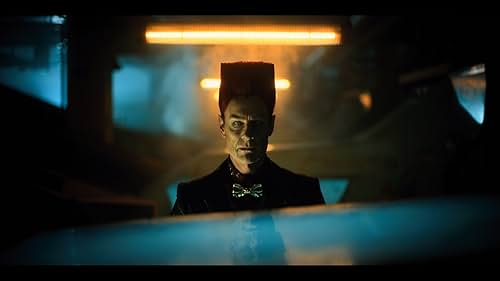
With Ortega's fate hanging in the balance, Kovacs drops a bombshell on the Bancrofts. Later, he comes face to face with an unsettling opponent. -
1.7 - "Nora Inu"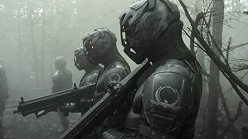
As Kovacs reconnects with a figure from his past, his tangled history with the Protectorate, the Uprising and Quell plays out in flashbacks. -
1.8 - "Clash by Night"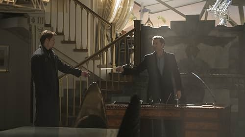
His world rocked, Kovacs requests a dipper to help him sew up the Bancroft case quickly. Ortega races to identify the mystery woman from Fight Drome. -
1.9 - "Rage in Heaven"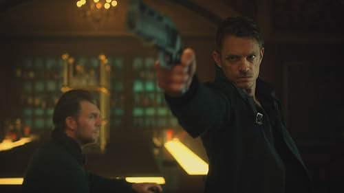
After a devastating rampage, Kovacs and his allies hatch a bold - and very risky - scheme to infiltrate Head in the Clouds. -
1.10 - "The Killers"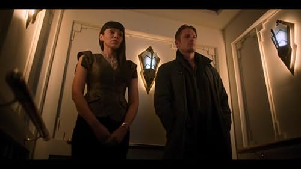
As a cornered Kovacs braces for a final showdown in the sky, a new hero emerges and more buried secrets come to light.
Temporada 2
-
2.1 - "Phantom Lady"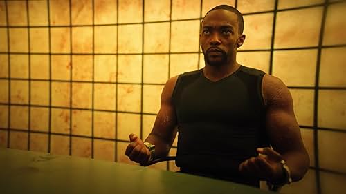
Thirty years after the Bancroft case, a Meth tracks down Kovacs to offer him a job, a high-tech sleeve and a chance to see Quellcrist Falconer again. -
2.2 - "Payment Deferred"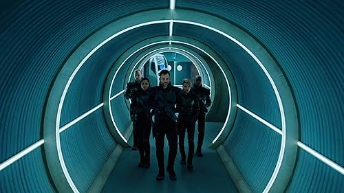
As Col. Carrera takes charge of the murder investigation, Kovacs sets out to find Axley's bounty hunter, and Poe's memory glitches worsen. -
2.3 - "Nightmare Alley"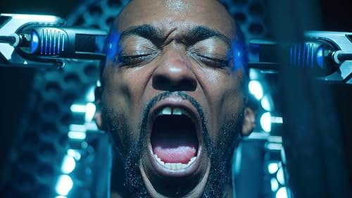
Kovacs contends with ghosts from his past as he's tortured by Carrera. Poe seeks help from a fellow AI. Trepp gets a lead on the man she's after. -
2.4 - "Shadow of a Doubt"
While the planet celebrates Harlan's Day, Kovacs hatches an escape plan, Quell pieces together fragments of her life, and Poe faces a reckoning. -
2.5 - "I Wake Up Screaming"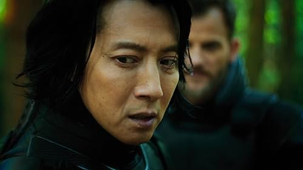
Carrera sends his secret weapon on a deadly mission. Kovacs and Trepp smuggle Quell out of the city. Poe takes a risky trip into virtual reality. -
2.6 - "Bury Me Dead"
As Quell reconnects to her past at Stronghold, she leads the clone into an underground chamber teeming with secrets. Gov. Harlan shows her true colors. -
2.7 - "Experiment Perilous"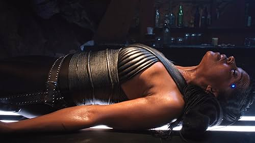
When Quell's sleeve begins to shut down, Poe and Ms. Dig send her into VR, where Kovacs finally learns the truth about her deadly rampages. -
2.8 - "Broken Angels"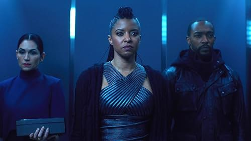
With the fate of the whole planet on the line, Kovacs, Quell and team race to find Konrad Harlan and stop a catastrophic blast of Angelfire.